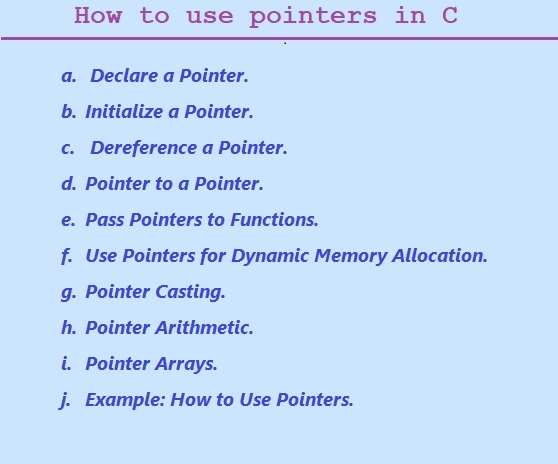

In previous tutorial section we learned what is pointers?
Pointer are very powerful and important features of C language.
Pointers are variables that holds a memory address.
It allows to manipulate memory directly which one is useful in various programming scenarios. In simple way we can say it is a way to refer to a specific location in memory.
In this section let learn how to use pointers in C Programming Language.
Topics covered in this tutorial section are.
a. Declare a Pointer.
b. Initialize a Pointer.
c. Dereference a Pointer.
d. Pointer to a Pointer.
e. Pass Pointers to Functions.
f. Use Pointers for Dynamic Memory Allocation.
g. Pointer Casting.
h. Pointer Arithmetic.
i. Pointer Arrays.
j. Example: How to Use Pointers.
How to Use Pointers in C programming.

a.Declare a Pointer.
Pointer declaration is the process of naming, declaring pointer variable and specifying the type of variable to which the variable is pointing. A variable declared as a pointer holds a memory address.
Syntax for pointer declaration.
Data type *name-of-variable;
To declare a pointer variable, the dereference (*) operator is used before a variable name.
Example
int *ptr;
Here the pointer *ptr declared will store some memory address but the variable ptr is not initialized, such pointer is called wild pointer.
Pointer variables can be defined in two ways in C :
int *p;
int* p;
The given above declarations are equivalent and the pointer variable name “p” can store or hold the integer memory address. However, we need to keep in mind that if we declare multiple variable in single line of statement we need to use * asterisk symbol before each of the variable name to indicate that, these are pointer variables.
For example:
int *x, *y, *z;
In the given example we have declared three pointer variables named "x", "y", and "z" that can hold the memory address of an integer.
b. Initialize a Pointer
we are familiar with how to declare pointer variable, now it is time to initialize pointer variable. When the pointer variable is declared it does not automatically point to a memory location.
To initialize a pointer variable to point to a specific memory location or variable we have to use the ampersand '&' operator to get the address of a variable.
For example, to initialize the pointer y to point to an integer variable called x, we would write:
int x = 42;
int *y = &x;
The statements given above sets the value of y to the memory address of x.
c. Dereference a Pointer
The asterisk (*) is the dereference operator.
The dereference operator also known as the indirection operator.
It is a symbol used in C programming languages to access the value stored at the memory location or address pointed to by a pointer.
If you have a pointer variable that points to a specific memory location, you modify, change or access the value stored at that memory location by using dereferencing (*) symbol.
If you wish to dereference a pointer, use the asterisk * symbol.
For example,
The following printf() function print the value of the integer that x points to, we would write:
printf("%d\n", *x);
d. Pointer to a Pointer
A pointer to pointer in c Language is also known double pointer, or a chain of pointers. a pointer store or contains the address of a variable. A pointer to pointer is also a form of multiple indirection. When the pointer to pointer is defined, the first pointer stores the address of the second pointer, which actually points to the location that contains the actual value.
The pointer to pointer is declared by using two asterisks **.
For example:
int x = 40;
int *y = &a;
int **z = &y;
Here, z is declared and initialized as a pointer to pointer. It points to the address of the y variable, which in turn points to the address of the variable x
e. Pass Pointers to Functions
Pointers can be passed to functions as arguments. Passing pointers variable to a function modifies the original variables values passed in. This process known as “pass by reference “in C programming.
The following example show to pass a pointer to a function.
we have simply declared the function parameter as a pointer.
For example:
void mul(int *p) {
*p=(*p)*(*p);
}
int main() {
int a = 9;
int b=a;
int *p = &a;
mul(p);
printf("\n %d*%d=%d",b,b,a); // prints 9*9=81
return 0;
}
Here, the mul function takes a pointer to an integer (int *p) and multiplies the value of the integer by one ((*p)*(*p)). In main (), we declare and initialized the integer variable ‘a’ and a pointer variable p that points to ‘a’. We then we have call the mul function, passing in the p pointer as parameter. After the function call, ‘a’ has been multiplied to itself i.e. 9*9=81.
f.Pointers for Dynamic Memory Allocation
The process of allocating memory to variable at runtime is called dynamic memory allocation in C. It is the one of the most useful features of c language for dynamic memory allocation. This feature allows to allocate memory at run time instead of compile time.
The malloc() function is used to allocate memory dynamically or runtime and it returns a pointer to the allocated memory.
For example:
float *t = (int*)malloc(sizeof(float));
Here, t is a pointer to an float data type that has been allocated using malloc() function. The sizeof operator is used to determine the size of an float in bytes.
Once a memory is allocated, after that we can use the pointer variable like any other pointer. The free () function is used when we are finished with the memory.
The resources used we should free it using the free function.
For example:
free(t);
The free() function used free the resources or memory that was allocated to t.
g. Pointer Casting
Many times in c program we may need to cast a pointer from one type to another.
This can be achieved by using the (type *) syntax.
For example:
float *y = (float *)malloc(sizeof(float));
Here, y is cast to a pointer to a float type.
h. Pointer Arithmetic
Pointers arithmetic can be done on pointers to move the pointers variable to different memory locations.
For our understanding let say we can increase or increment a pointer to move it to next memory location. This is popularly used in array operations where you can use the pointer variable to read or access the elements of an array.
For example, to print the second element of an float array using a pointer, we could write:
float salary[] = {123.60, 2890.54, 3348.87};
int *ptr = salary; // ptr points to the first element of salary
printf("%.2f\n", *ptr); // prints 123.60
Here, ptr is set to point to the first element of the salary array, and *ptr dereferences the pointer to get the value of the first element (which is 123.60).
i Pointer Arrays
you can use and declare arrays of pointers in C programming.
For example:
float *arr[5];
The given statement above declares an array of five pointers to float. Each element of the array can point to a separate float variable.
Pointer arithmetic is used to access elements of an array
example:
int arr[] = {10.2345, 22.4421, 34.2345};
int *ptr = arr; // ptr points to the first element of arr
printf("%.2f\n", *(ptr + 1)); // prints 22.44
Here, ptr is the pointer variable of type int has been set to point to the first element of the arr array. We have use pointer arithmetic to access the second element of the array (*(ptr + 1)), which is 22.44.
j.example of How to Use Pointers
An example to demonstrates the concepts of pointer that we've learnt:
#include <stdio.h>
#include <stdlib.h>
void mul(int *p)
{
*p=(*p)*(*p);
}
int main() {
int x = 40;
int *y = &x;
printf("y = %d\n", *y); // prints y = 40
mul(&x);
printf("x = %d\n", x); // prints x = 1600
float *arrptr = (float *)malloc(3 * sizeof(float));
arrptr [0] = 10.33;
arrptr [1] = 20.45;
arrptr [2] = 33.32;
float *qptr = arrptr;
printf("arrptr [0] = %.2f\n", *qptr); // prints arrptr [0] = 10.33
qptr++;
printf("arrptr [1] = %.2f\n", *qptr); // prints arrptr [1] = 20.45
qptr++;
printf("arrptr [2] = %.2f\n", *qptr); // prints arrptr [2] = 33.22
free(arrptr);
return 0;
}
Output:
y=40
x=1600
arrptr [0] = 10.33
arrptr [1] = 20.45
arrptr [2] = 33.22
Previous Topic:-->> What is Pointer in C. || Next topic:-->>Pointer Declaration.
Other Topics:
Variables and Identifiers
Relational Operators
if-else statements
Switch case
While Loop
Infinite while Loops
C FOR Loop
Infinite for Loops
Continue in Loops
One Dimensional Array
Two Dimensional Arrays
Read and Display 2D Arrays
Types of functions
Passing Array To Functions
Nesting of Function
Array vs Structure
Array of Structure
Structures and Functions
Structures Within Structures
Use Of Pointers In C
File Handling In C
Loops FAQ
Arrays FAQ
count vowels in a file
Function FAQ
Conditional Statements Assignments
For Loops Assignments
Arrays Assignments
Function Assignments
Structure Assignments
Pointers Assignments
Files Assignments
Storage classes Assignments
Binary Files
count words,lines in a file
Copy files
Update File
Continue in Loops
break in Loops
Difference Between While and Do while
difference while do..while & for
malloc
calloc
Storage Classes
Operators MCQ
Conditional Statements MCQ
Loops MCQ
Arrays MCQ
Function MCQ
Structure MCQ
Pointers MCQ
Files MCQ
Storage classes MCQ